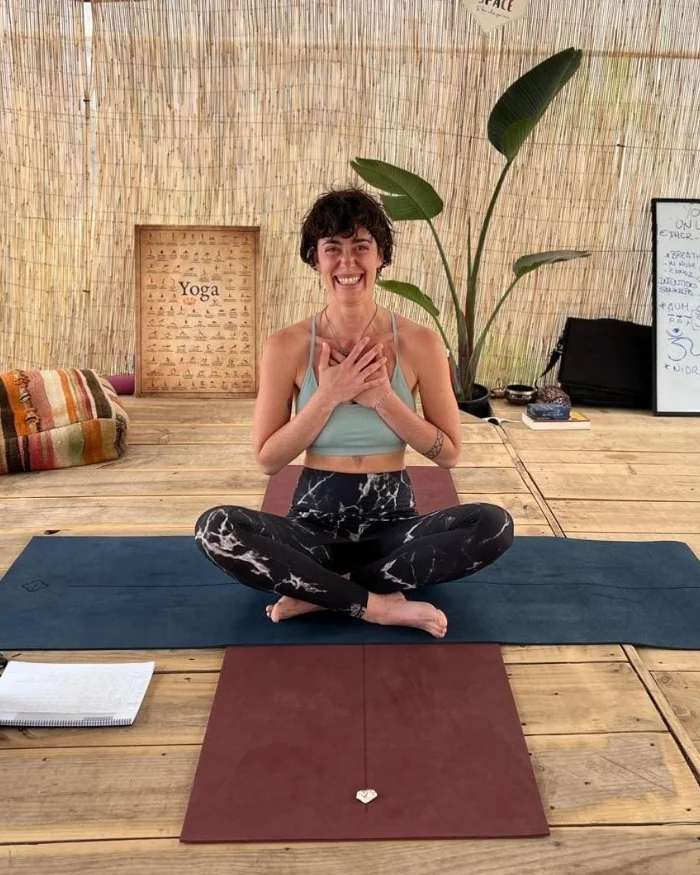

Hatha Yoga & Flow · Bruxelles · Dimanche 18h45–19h45

Hatha Yoga & Hatha Flow, tous les dimanches de 18h45 à 19h45 à partir du 27 septembre à Bruxelles.
Danya est médecin de formation. Laissant derrière elle cette carrière qui ne lui convient pas, elle voyage durant plusieurs mois en Inde où elle découvre le yoga comme chemin de reconnexion à elle-même et à son corps. Depuis lors, elle a donné au yoga une place centrale dans sa vie de tous les jours, et s'est finalement formée à La Casa Shambala début 2025, en Hatha Yoga et Vinyasa Yoga.
Ses cours sont principalement inspirés du Hatha Yoga et du Hatha Flow. Ils sont toujours basés sur une intention issue de la philosophie du yoga (par exemple, l'ancrage, le souffle, le contentement, l'un ou l'autre chakra, ...), qui va accompagner tout le cours. Les maîtres-mots sont : présence et connexion à soi.
Par ailleurs, Danya est poète en slam, ainsi que conteuse et illustratrice. Sa poésie imprègne ses cours autant que ses récits.
Contact :
Email : hershkowitz.danya@gmail.com
Tél. : +32 495 70 89 54
Dès le 27 septembre · Tous les dimanches
Deux prix au choix selon vos moyens, qui peuvent aussi varier d'une semaine à l'autre.